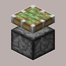
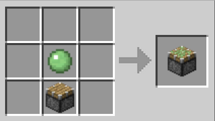

sticky piston

Description
Sticky Pistons are similar to pistons; the difference is that they can pull blocks as well as push them. Pistons can be broken using any tool with equal efficiency, and will always drop itself. Pistons are always placed facing towards the player. When powered, the piston's wooden surface (head) extends outward by one block, which can be heard within a 31x31x31 cube centered on the activating piston, the piston can push up to 12 blocks in a line with it. Sticky pistons only stick to a block when retracting.
